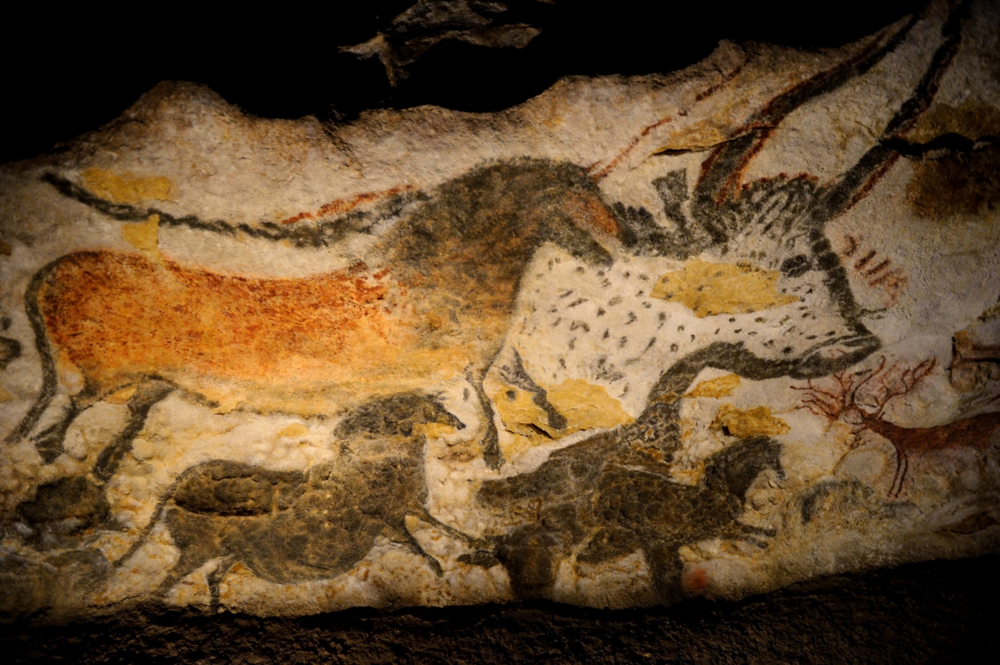
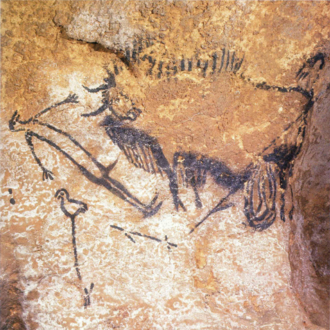
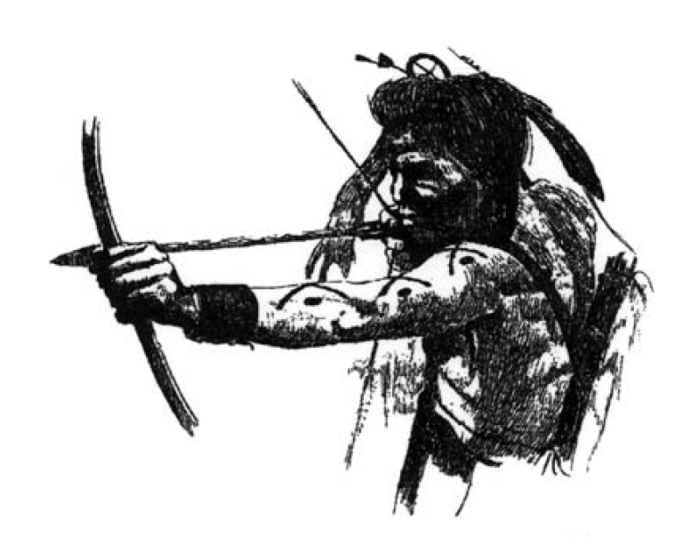
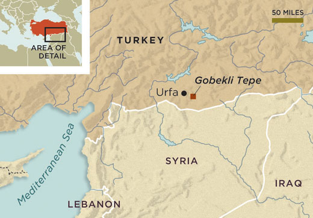
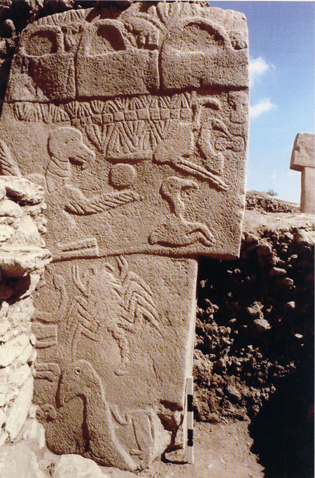
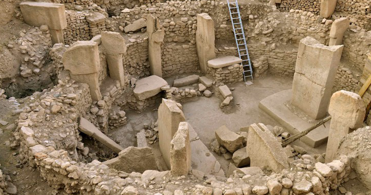

Cave paintings like we find at Lascaux cannot be seen as 'art works' in the modern sense of the word. They are more comparable to media: utensils to come into contact with the spiritual world that lies behind the everyday physical one. The natural order of things was that this spiritual world was as much a part of the world as the physical: everything that happened had repercussions in both realms.

Seperation from the natural order
It is unlikely that our epipalaeolithic ancestors viewed themselves as seperated from this natural order – let alone saw themselves as governing this natural order, standing above it. Life was harsh, people were born and died, and rituals needed to be followed in order to keep the natural balance.
Indicative of this diminution of man is that in all the known cave paintings, only three man-figures are known. In the famous pre-historical site of Lascaux in France, there is actually only one. At the same time, this is the only painting that has a clear narrative surrounding it – a narrative that still resonates with us today, after one hundred and twenty centuries. The human figure is displayed while being thrown over by an aurochs.

Cet homme, le seul figuré dans la grotte, est le personnage central d’une scène narrative. On ne connaît que trois autres scènes vraiment comparables dans tout l’art paléolithique […]. La présence d’un animal blessé et offrant, d’un oiseau et deus possibles armes de chasse, ajoute encore à l’étrangeté de ce décor du fond du Puits. (Delluc 2008, 180f).
One could view this image as a battle between nature and man, in which the last is destroyed by the first. An argument could be made that this is an indication that the other pictures are specifically not meant to indicate such a battle. Instead, they display the fundamental unity of man and nature and the reciprocity between the two that seems to be fundamental to man in his original surrounding.
Miniturization
According to the Belgium prehistoricus Marcel Otte, the miniturization of stone utensils changed our metaphysical relationship with our surroundings. In the course of this miniturization process, the relatively big and coarse hand axes slowly evolved into small spear points. Those points were eventually mounted on top of a hardened piece of wood, forming spears.
Furter miniturization of these spears and the emergence of bows as a propelling mechanism allowed man to overcome the constraints of his physical build-up: using the bow and arrow, he was able to kill prey animals at a large distance without physical contact. Of all the animals, homo sapiens is still the only one that has such a capacity. Otte states this in the following manner:

The bow and arrow corresponded to an entirely new metaphysical relationship to nature. [They] overcame the constraints of speed, distance, and precision. Humans who mastered this technique came close to being natural gods by borrowing part of nature’s power. (Otte 2009, 541)
T-shaped pillars
We can see this change in metaphysics emphasized when we look at Göbekli Tepe: an archaeological site in Southern Turkey that is excavated since 1995. Göbekli Tepe is build around twelve thousand years ago, more or less the same period in which we can witness the emergence of the bow and arrow.
In this period, man still roamed the earth as hunter-gatherers, even though first experiments with settlements started to emerge. But Göbekli Tepe is not a settlement: no livings have been found and it completely lacks any indication of habitation.

The location of Göbekli Tepe (from Schmidt, 2010)
The site is characterized by lots of so-called T-shaped pillars, each weighing around fifty tons. Those pillars are put in circles surrounding two other, even larger pillars – around twenty of such open circles have thus far been discovered.
The pillars are clearly anthropomophic, displaying arms and hands with the T interpreted as the head. Their style is, however, very minimalistic and abstract. This is significant, because other reliefs and statues of the same time and location are very naturalistic – the abstractness of the pillars therefore must be intentional:

The animal reliefs are quite naturalistic and correspond to the fauna of the period. However, the animals depicted need not necessarily have played a special role in peoples’ everyday lives – as game, for example. They were rather part of a mythological world which we have already encountered in cave painting. The important thing is that fabulous or mythical creatures, such as centaurs or the sphinx, winged bulls or horses, do not yet occur in the iconography and therefore in the mythology of prehistoric times. (Schmidt 2010, 246)
Just like in the cave paintings, we see a naturalistic display of the direct surroundings of the makers. The significant difference is, however, that in Lascaux we only see direct fauna, while here at Göbekli Tepe this direct fauna is centered around these impressive T-shaped anthropomophic pillars. Is it unlikely that these pillars are representatives of powers that are bigger than the direct immediate surroundings of the makers? Powers that are present on a different level – a level that is abcent in Lascaux...?
The question of who is being represented by the highly stylized T-shaped pillars remains open, as we can not say with certitude if concepts of gods existed at this time. So the general function of the enclosures remains mysterious; but it is clear that the pillar statues in the centre of these enclosures represented very powerful beings. (Schmidt 2010, 254)
Force and ideas
Indicative for this line of thought is the fact that the caves at Lascaux were not made by man and that the paintings at that place often make use of the direct geological situation found at the caves. Göbekli Tepe, on the other hand, exists only thanks to human endeavour. Lascaux is chosen, Göbekli Tepe is created.
In this vain, it has been stated that Lascaux is the manifestation of a force, while Göbekli Tepe is the manifestation of an idea.

An overview of the T-shaped pillars at Göbekli Tepe
The builders of the T-shaped pillars were beginning to be cut loose from their direct surroundings and started to see truth at a level that was independent of it. Their metaphysics started to develop in a vertical way.
The origin of gods, the origin of agriculture
One of the big changes in human history is the change from hunter-gatherers to settled farmers. This development changed the relation of man with his direct surroundings.
Hunter-gatherers roam the earth in small groups while farmers stay at the same place to sow and harvest their crops, tend their fields and kill their life-stock; on this place they raise their children and burry their dead. In this way, they form a psychological binding with their physical surroundings; they start to feel responsible for its well-being and develop a sense of ownership. They start to see themselves as opposite to nature...
Göbekli Tepe is a place made by man. A riligious centre that people gravitate towards in order to perpetuate and celebrate their common culture and rituals and to ask higher (?) powers for assistance. A place where the divine is starting to withdraw from nature and takes the form of man-made objects. A place in the heideggerian sense of the word, where the vertical metaphysics is taking root.
References
Alcorta, C.S. & R. Sosis, 2005, “Ritual, Emotion, and Sacred Symbol. The Evolution of Religion as an Adaptive Complex.” Human Nature, Winter 2005, pp.323–359.
Delluc, B., 2008, Dictionnaire de Lascaux. Éditions Sud Ouest.
Dietrich, O., M.Heun, J.Nortroff, K. Schmidt & M.Zarnkof, 2012, “The role of cult and feasting in the emergence of Neolithic communities. New evidence from Göbekli Tepe, south- eastern Turkey.” Antiquity 86/333: pp674–695. Available from Cambridge.
Leroi-Gourham, A., 1982, The Dawn of European Art. An Introduction to Palaeolithic Cave Painting. Cambridge UP.
Otte, M., 2009, “The Paleolithic-Mesolithic Transition”. In: M. Camps, P. Chauhan (eds.), Sourcebook of Paleolithic Transitions, Springer, pp.538–553.
Peters, J. & K. Schmidt, 2015, “Animals in the Symbolic World of Pre-Pottery Neolithic Göbekli Tepe, South-eastern Turkey: A Preliminary Assessment.” Anthropozoologica. Available from ResearchGate.
Schmidt, K., 2010, “Göbekli Tepe – the Stone Age Sanctuaries. New results of ongoing excavations with a special focus on sculptures and high reliefs.” Documenta Praehistorica XXXVII, pp.239–256.
Schmidt K., 1995, “Investigations in the Upper Mesopotamian Early Neolithic: Göbekli Tepe and Gürcütepe. NeoLithics.” A Newsletter of Southwest Asian Lithics Research 2/95: 9–10.